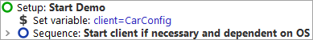
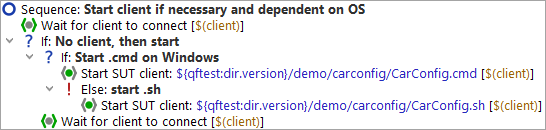

| Version 6.0.3 |
Our first step is to examine the "Setup" node:
|
|  | ||
|
| Figure 1.3: The Setup Node | ||
In the "Setup" node you'll see two child-nodes:
Let's also have a brief look inside the Sequence: Start client if necessary and dependent on OS:
|
|  | ||
|
| Figure 1.4: The Sequence to start the SUT | ||
QF-Test allows you to test applications on Microsoft Windows, macOS as well as on Unix
systems. The test-suite described in the tutorial can be replayed on any of them. The only node
where we need to differentiate between the operating systems is the startup of the
application. This is done by means of an If - Else structure running a
.bat file on Windows, respectively a .sh file otherwise (on
macOS or Linux).
The Start SUT client node starts the application (SUT) and sets up a link
between qftest and the SUT. In order to be independent of the actual installation we use
a relative path, starting from the QF-Test version directory, contained in the QF-Test
variable ${qftest:dir.version} (see manual chapter Variables).
Please also note that the application is only started in case the client has not yet been connected.
At this point, we're ready to actually start the SUT:
During execution QF-Test marks the active step by use of an arrow pointer ->.
When the setup sequence is completed, our demo application "JCarConfigurator" is going to appear on the screen. As QF-Test gets back the focus after the replay action, thus being raised to the foreground, the demo application might be hiding behind it.
|
|  |
||
|
| Figure 1.5: The JCarConfigurator Demo | ||
| Last update: 9/6/2022 Copyright © 2002-2022 Quality First Software GmbH |